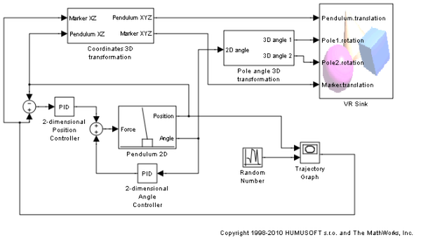
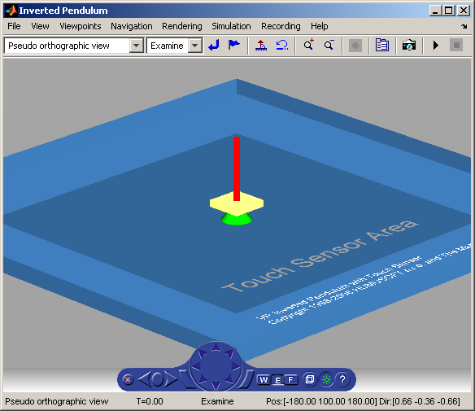

Inverted Pendulum
The vrpend example illustrates the various ways a dynamic model in Simulink® can interact with a virtual reality world. It is the model of 2-dimensional inverted pendulum controlled by a PID controller. What distinguishes this model from 'common' inverted pendulum models is visualization and the methods of setting the setpoint. You visualize and interact with a virtual world by using a Trajectory Graph and VR Sink blocks. The Trajectory Graph block allows you to track the history of the pendulum position and change the setpoint in three ways:
- Mouse - Click-and-drag a mouse pointer in the Trajectory Graph 2-D window
- Input Signal - External Trajectory Graph input in this model driven by a random number generator
- VR Sensor - Activates the input from a VRML TouchSensor
When the pointing device in the VRML viewer moves over an active TouchSensor area, the cursor shape changes. The triggering logic in this model is set to apply the new setpoint value with a left mouse button click.
Notice the pseudo orthographic view defined in the associated VRML file. This effect is achieved by creating a viewpoint which is located far from the object of interest with a very narrow view defined by the VRML FieldOfView parameter. An orthographic view is useful for eliminating the panoramic distortion that occurs when using a wide-angle lens. This technique is also known in photography. The fallback of this technique is that locating the viewpoint in a distance makes the standard viewer navigation tricky or difficult in some navigation modes. If you want to navigate around the virtual pendulum bench, we recommend that you switch to some other viewpoint.
 